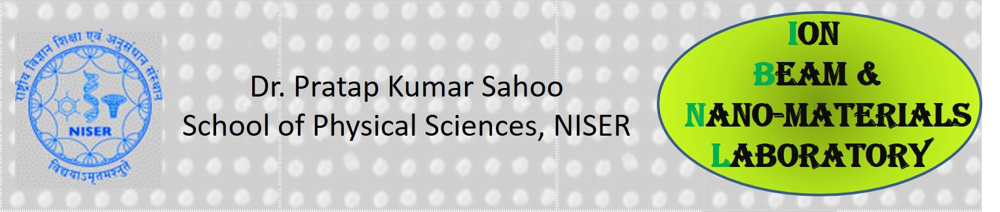

- Congratulation to Gurupada for his paper in "ACS Applied Optical Materials" paper.
- Congratulation to Subhashree for her paper in "J. Applied Physics" paper.
- Congratulation to Gurupada for acceptance of his "Nanotechnology" paper.
- Congratulation to Sourav for the acceptance of his "Applied Physics A" paper.
- Congratulation to Mrinal for acceptance of his J. Alloys and Compound paper.
- Congratulation to Utkalika for acceptance of her ACS Applied Nano materials paper.
- Congratulation to Bidyadhar for acceptance of his PCCP paper.
- Welcome to Dr. Soumendra Das joining IBNL as a Institute Postdoc Fellow.
- Congratulations to Sourav for the "Materials Letter" paper
- Congratulations to Subhashree, Gurupada, Kalyan, Bidyadhar and Mrinal for the "AIP Advances" paper ;Selected as Featured article by the Editor.
- Congratulations to Mrinal K. Sikdar and Int. MSc student Bhabesh Sarangi for the "Nanotechnology" paper.
- Congratulations to Avanendra Singh and co-authors for the "J. of Applied Physics" paper acceptance. Selected as Editor's choice article.
- Congratulations to Mrinal K. Sikdar and co-authors for the paper published in "Physical Review Applied" .
- Congratulations to Dr. Debi Datta and co-authors for his "Scientific Reports" paper. That is highlied now in "Sci. City" via the nature publications group
- Welcome to Dr. Nitul Rajput in the group as Postdoc from August 2018. Wishing you a good stay at NISER and good work in the lab
- Welcome to all the summer students in joining in the IBN lab. Wishing you a good stay at NISER and good work in the lab
- Congratulation Dr. Avanendra Singh for sucessfully completed his Ph.D thesis viva on 20th April 2018. Thanks to all the TMC members for their co-operations
- Congratulation Dr. Vantari siva for sucessfully completed his Ph.D on 19th March 2018. Thanks to all the TMC members for their co-operations
- Congratulation Vantari siva and Avanendra Singh for submitting their thesis on 30th Nov 2017
- Invited talk at 4th International conference on Nanostructuring by Ion Beam (ICNIB-2017) by Dr. Pratap Sahoo, Debi Ahilay Unkiversity, Indore, 11-13th Oct-2017.
- Invited talk at International conference on Accelerator in Materials and Medical Sciences (ICAMMS-2017) by Dr. Pratap Sahoo, Amity University, Dubai, 5-7th Oct-2017
- Congratulation Debi P. Datta for accepatnce of Applied Surface Science papers.
- Welcome to Dr. Sujit Kumar (PhD, IIT Kharagpur), joined as PDF in our froup on 1st Sept 2017
- Congratulation Vantari Siva for acceptance of the NIMB and Applied Surface Science papers
- Congratulation Avanendra Singh for acceptance of the NIMB and Applied Surface Science papers
- Welcome Debashrita Mahana as a visiting Master project student (Jan - May 2017)
- Welcome Dr. A Chettah: as visiting scientist to our group during 29th Jan - 12th Feb 2017
- Congratulation Debi P. Datta and Vantari Siva for acceptance of your PCCP Paper, 7th Oct 2016
- Invited ORAL talk:"Electron-phonon coupling phenomena of ZnO Nanorods for photonic and phononic application" by Dr. Pratap Sahoo in Eoropean Advance Materials Congress at Stockholm, Sweden, during 23-25 August 2016
- Congratulation Vantari Siva for acceptance of your RSC Advance Paper, 2nd June 2016
- Congratulation Debi P. Datta for your RSC Advance Paper, May 2016
- Congratulation Vantari Siva, Siddharth Sahu and Debi for their paper in J. Alloys and Compounds, May 2016
- Congratulation Debi P. Datta for his paper accepted in NIMB March 2016
- Congratulation Vantari Siva for his paper published in JAP Feb 2016
- Congratulation Avanendra Singh for his paper in MRS Advance published in Jan 2016
- Congratulations... Vantari Siva, Debi P. Datta, and Avanendra Singh for their joint work published in Applied Surface Science Jan 2016.
- Dr. Debi P. Datta and Avanendra Singh contributed to Radiation Effect in Insulators (REI)-2015 conference at Jaipur, India
- Congratulations .. Avanendra Singh for his RSC Advance paper accepted on 6th Oct 2015.
- Congratulations .. Vantari Siva for his 1st paper accepted on 9th Feb 2015.
- Congratulation .. Avanendra for his 1st paper published online on 24th Dec2014.
- 2014-15, II semester started on 23rd Dec 2014: teaching Integrated Lab-I (P443) and Integrated Lab-II (P444)
- Invited talk (By Dr. P. K. Sahoo) on Multi Scale Modeling of Materials and devices (MMMD 2014), DAE BRNS symposium.
- International conference on Swift heavy ion in Materials Engineering and Characterization (SHIMEC 2014), IUAC New Delhi, India, contributed by Vantari Siva and S. Prusty from Dr P. K. Sahoo's group
- 2014-15, semester started on 22nd July; Teaching P241.242 and P342 Lab course
- Visiting scientist to TU Ilmenau :May 20 July 20, 2014
- Inter IISER/NISER Physics Meet, March 15-16, 2014 Contribution by Dr. Pratap K. Sahoo
- Indo-French Symposium on Functional Metal-Organics: Applications in Metals and Catalysis, NISER, Bhubaneswar, India, Contribution by Avanendra Singh.
- 3rd International conference on Physics at Surface and Interface (PSI2014), Puri, Odisha, India, contribution by Dr. Pratap. K. Sahoo and Vantari Siva.
- The 2013-14, II semester started from 23rd Dec 2013: teching P343 and 344 Lab courses.
- P473-Experimental Tech. :Final Exam: 27.11.2013 (9:30-12:30h)PL241/242 Exam on 18th and 19th Nov 2013.
- International conference on Nanostructuring by Ion beam in material Science (ICNIB-2013)2013, Jaupur, India, contribution by Dr. Sudakshina Prusty, Vantari Siva, S. K. Das, and Dr. Pratap K. Sahoo.
- 2013-2014 section, Semester I, started on 23rd July2013, Teaching started P473 - Experimental Techniques and PL-241/242 (Lab course)
- Visiting Professor at Department of Material Electronics, TU, Ilmenau, Germany : 20th May2013-18th July2013, in DAAD Fellowship
- PL-343/344 lab exam on 22nd and 23rd April 2013 (Best wishes to our 6th sem students)
- Wirebonder installed in Lithography lab on 11th March 2013
- Laminar Flow Table installed in Lithography lab on 4th Feb 2013
- PL-343/344 Lab course started from 1st of Jan 2013
- FESEM installed on 13th Dec 2012